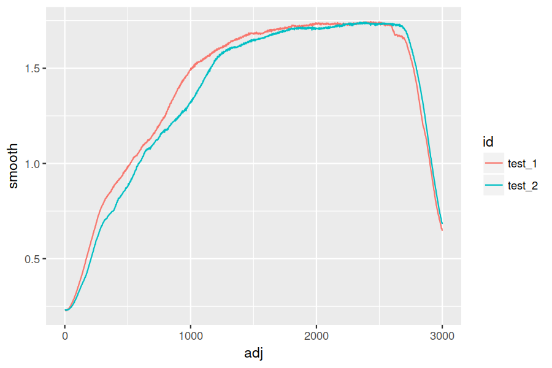

Translating R to python
Background
I've been using R for at least 5 years. Lately, I've been trying to pick up python as
well, which is quite the learning experience! I've been through some tutorials (or pieces
of them) from think python and lpthw, as well as classes on Coursera. With some basics
under my belt, I started getting into numpy and pandas, which is where things got
tricky. I can vaguely recall a time in my R Padawan days when I had a sense of what I
wanted to do, but didn't know enough to even formulate the question correctly. I also find
I don't learn well by just reading docs. I want to poke and prod around, trying to wrap my
head around what I'm reading. For example, I ran across the the function tolist() via
SO, but have no idea how to interpret this as it is:
Series.tolist() Convert Series to a nested list
I thought a pd.Series was just like an R vector; why would it be "nestable" in the
first place? What is a nested list and why do I want that? Some examples just show that it
converts from a pd.Series to a list. I don't see any "nesting," but then don't know what
that is.
In any case, the point is that instead of trying to just learn pandas in some linear
way, I thought it might be more effective to simply take some R code and translate it to
python. I know what I want to know and the tools I would use in R, so getting my brain
around how to do the same in python seemed like an interesting way to learn. Whatever I
pickup will be relevant (I'm already doing these sorts of tasks), and the learning is more
targetted (I'm extracting the small % of information I need vs. trying to digest things I
likely will never use).
The challenge
The data consists of some raw test data from a sensor. I've anonymized what it is, but the gist is as follows:
- I start logging data via USB at 1000 Hz
- The test begins and I get the data of interest
- I stop logging that sample
Because the logging software and machine don't communicate, I end up with varying amounts of baseline, nominally zero data before the test occurs. Once it's over, I have a "tail" of unknown length after the test is complete. I tend to have anywhere between 5-25 tests, and I want to align their starts for plotting/analysis. I've created a sample dataset here if you want to follow along.
Using R
So you can get a sense of how I'm doing this in R (comments/improvements welcome!),
let's look at the raw data. i here is just the row number, but because of the sampling
rate it's also the time in milliseconds.
library(ggplot2)
library(reshape2)
data <- read.csv("https://jwhendy.github.io/data/r-to-python-data.csv")
head(data)
i test_1 test_2 1 1 -0.03 -0.05 2 2 -0.03 -0.05 3 3 -0.03 -0.05 4 4 -0.03 -0.05 5 5 -0.03 -0.05 6 6 -0.03 -0.05
If we plot it, you can see the lag I'm talking about:
data_melt <- melt(data, id.vars = "i")
ggplot(data_melt, aes(x = i, y = value, colour = variable)) + geom_line()

After the lag, the machine does a little bit of warmup/prep which is that first mini-peak. Then there's a brief pause and the test is run. The "start" of each test is the point right after the pause, and that's what I want to align to.
For my python challenge, I'll be trying to create an analog of this:
## here I apply a moving average to smooth the data
## source: https://stackoverflow.com/questions/743812
ma <- function(x, n){stats::filter(x, rep(1/n, n), sides=2)}
## this is a modified form of the function I use to align the data
adjuster <- function(vals) {
## find the baseline value and add 0.1 to create a "trigger" level
baseline <- mean(vals[1:20], na.rm = T) + 0.1
## what's the index of the first value above our trigger?
base <- which(vals > baseline)[1]
## find the mini-peak, which occurs within 500ms of the initial rise
peak <- which.max(vals[base:(base + 500)])
## find the trough afterward, which signals the actual test start
valley <- which.min(vals[(base + peak):(base + peak + 600)])
## add up our cumulative indices
start <- base + peak + valley
## I manually examined a couple data points at this setting and found
## the test to last ~3000ms
end <- start + 3000
## I want to ditch the lag/warm up, keep the test itself, and ditch the
## logging of nothing once the test completes. To do this, I send back:
## - NAs from 0 to the start index
## - the shifted milliseconds for the test data
## - NAs until the end
adj <- c(rep(NA, start),
1:(end - start),
rep(NA, (length(vals) - end)))
return(adj)
}
## this is likely overkill for 2 columns, but lapply is typically
## how I go about processing columns through some function, creating
## data frames, and then re-assembling into a big dataframe afterward
data_list <- lapply(2:ncol(data), function(i) {
## create a dataframe to hold the raw force and an id for this data
n <- length(data[, i])
temp <- data.frame(id = rep(names(data)[i], n),
raw = data[, i])
## run the raw force through the ma() function to smooth
## dump the NAs returned
temp$smooth <- ma(temp$raw, 250)
temp <- temp[!is.na(temp$smooth), ]
## run the smoothed force through our adjuster function
## purge the returned NAs
temp$adj <- adjuster(temp$smooth)
temp <- temp[!is.na(temp$adj), ]
return(temp)
})
## lastly, I put the data into long form by "stacking it" using rbind
data_all <- do.call(rbind, data_list)
ggplot(data_all, aes(x = adj, y = smooth, colour = id)) + geom_line()
